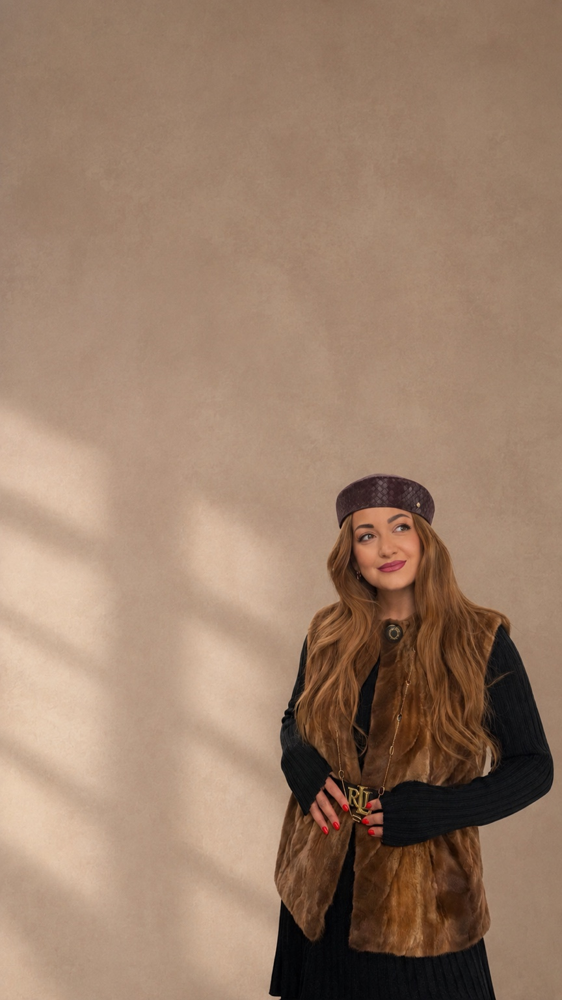
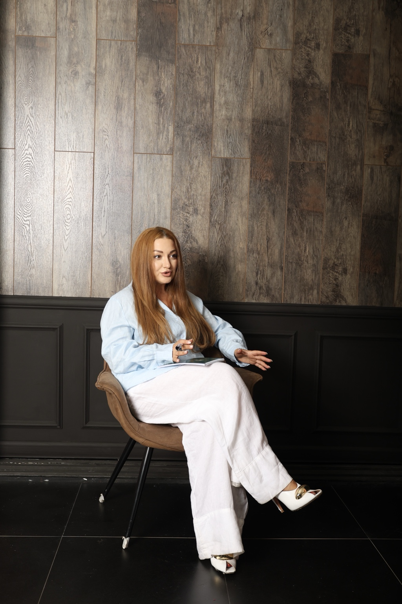

МАРГО АВАНЕСЯН☰
Глубже,
чем кажется
чем кажется
МАРГО
АВАНЕСЯН
АВТОР СТРАТЕГИЧЕСКОЙ
ДИАГНОСТИКИ ЛИЧНОСТИ
ПСИХОЛОГ
КОУЧ
ПРОФАЙЛЕР
МАК-ЭКСПЕРТ
КОУЧ
ПРОФАЙЛЕР
МАК-ЭКСПЕРТ
Помогаю понять себя,
увидеть новые возможности
и принять осознанные решения.
Записаться на диагностику →увидеть новые возможности
и принять осознанные решения.
«Осознанность сегодня — свобода завтра»
НАПРАВЛЕНИЯ
РАБОТЫ
Комплексная диагностика
Глубокий анализ личности, особенностей мышления, сильных сторон и внутренних ограничений.
Стратегия решений под вашу задачу
Индивидуальный подход к поиску решений с учётом ваших целей и жизненной ситуации.
Личность — отношения — реализация
ОБО МНЕ
Я верю, что у каждого человека уже есть ресурсы, чтобы жить свою жизнь осознанно и реализовывать свой потенциал.
Моя задача — помочь увидеть эти ресурсы, понять себя и найти свой путь.
Больше обо мне →
Диагностика — это не про ярлыки, а про возможности.ДЛЯ КОГО
МОЯ РАБОТА
Для тех, кто хочет лучше понять себя и свои истинные желания.
Для тех, кто находится на перепутье и ищет осознанные решения.
Для тех, кто стремится к личностному росту и реализации своего потенциала.
ДИАГНОСТИКА — ЭТО НЕ ПРО ЯРЛЫКИ,
А ПРО ВОЗМОЖНОСТИ
ЗАПИСАТЬСЯ
НА ДИАГНОСТИКУ
Сделайте первый шаг к осознанным решениям и новой версии себя.
Записаться →Глубже, чем кажется